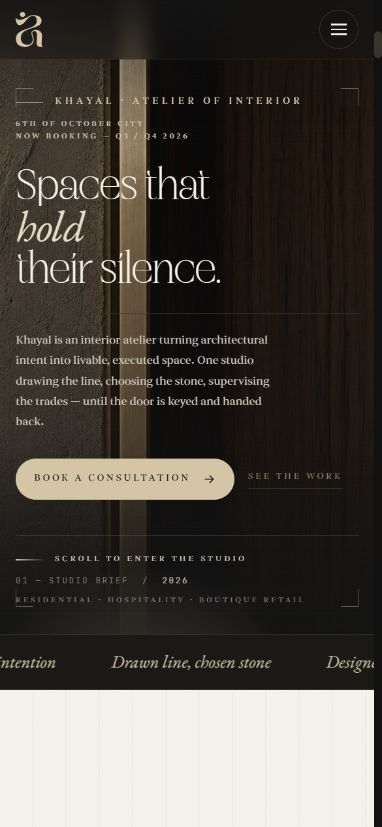
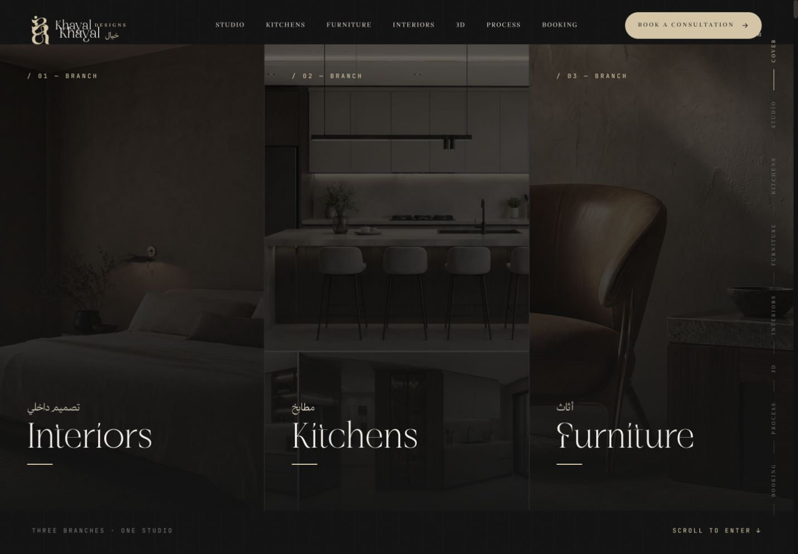

Three ways into the studio
Interiors, kitchens and furniture provide clear entry points into the work.
Websites
A digital atelier for interiors, kitchens and furniture.
The experience moves from a three-part introduction into studio stories, project collections and a consultation journey.
HTML5 / CSS3 / JavaScript / GSAP / ScrollTrigger
Interiors, kitchens and furniture provide clear entry points into the work.
GSAP and ScrollTrigger coordinate the project presentation and process sequence.
The studio story leads into a consultation journey.


